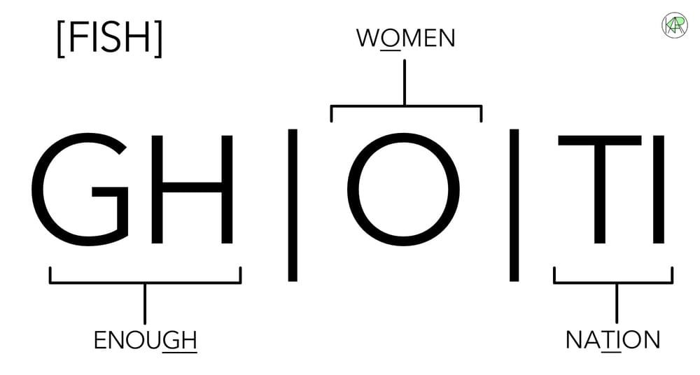
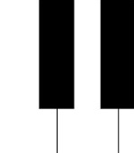
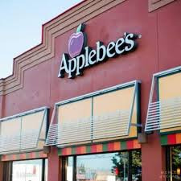
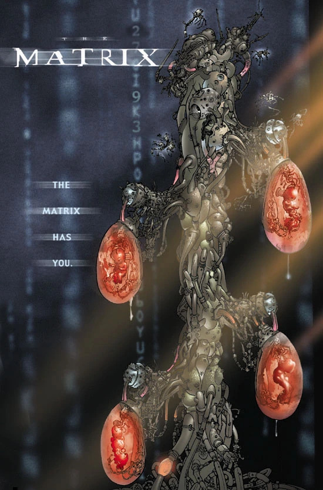

Ghoti: Deconstructing Lupe Fiasco's 1:51 Masterpiece

Lupe Fiasco is one of those artists that can be studied for a lifetime. From complex themes, to painting pictures with words, almost all of his catalogue is deep to the point of needing it explained. As one of his lyrics go, "It's hard being a Lupe fan, go to Harvard to be a Lupe stan". His credentials also speak for themselves, not Grammys or accolades, but that he is currently teaching at MIT. His style is one characterised first and foremost by the unexpected through the mastery of the English language. Some of the simpler examples of this come from his early career, i.e. "Gotta eat", a song with every line a double entendre about both a gangster's life and fast food's nature.
The Drill Music in Zion Context
For the entirety of his independent career he consistently put out amazing projects: Tetsuo & Youth, Drogas Light, Drogas Wave, Samurai, and Drill Music in Zion. Most fans, me included, consider Tetsuo & Youth his most challenging body of work, thanks both to the many layers of some songs in particular, and the double nature of the album as a whole, the album being interpretable both front to back and back to front.
However, due to this exact complexity, it is extremely difficult to do a complete breakdown of a song in just one essay. Instead, I opted to focus on one of his shorter albums, Drill Music in Zion.
Drill Music in Zion is a cryptic album filled with a myriad of references ("Myriad", nice), intricate rhyme schemes, and deep reflections. Despite being created in just three days without any written material, using only a USB microphone in the studio, the final product is as coherent and polished as any of his other works.
The title itself could be referring to paradise and the tainting of it by drill music, or robots drilling to Zion (humanity's last safe haven, in the Matrix movie), the pondering of whether violence (drill music) has a place in Zion, or the call to look inside (drill) to what is really consumed (music) in what looks like a paradise (Zion).
The Album Cover: Four Keys of Interpretation
The album cover appears as abstract art, with an unnatural yellow signifying the artificial, but also order, and the earth tone/noisy part alluding to nature or chaos. In total, there are 4 ways of looking at it, each corresponding to a key of interpretation applicable to the album:

A drill going into the earth, searching something, breaking skulls in the process. This is the culture destroying the ones that helped make it, the artists and art, or digging down to the last safe haven of humanity. This is culture degrading the art, through both expectations and standards of conformity.
A Note on Phonetics
Ghoti is a linguistic construct often pronounced as Fish. The song plays on the listener possessing this knowledge. Also, the ichthys (a fish) is a very common symbol of Jesus Christ. The entire song is about deceit and changes of perspective.
Assassin's Creed
To begin, one must look at the direct interpretation. The song references to the Assassin's Creed games include "rapping it back indeed" as the protagonist is time traveling, "Capture catastrophes like a camera feed" since the cutscenes are assassinations, "Neuralink is pirating your fantasies" is the machine that takes you back to your ancestor's memories, "Mistaking sanitation for sanity" references how the professional aspect blinds the protagonist regarding the morality of the lab he is in, "Mistaking staying for cannot leave" since the protagonist finds out later he is a prisoner.
These motifs continue throughout the verse, with the garden of Eden, apple, kings and Egypt. All of these are pretty clear references if you know the Assassin's Creed games. One thing worth highlighting is that in the game you have to kill 9 templar targets (Hunt for the Nine), and there are 9 songs on the album.
Other ways of interpretation
Now for the interpretations beyond this surface level: "Assassin's Creed, rapping it back indeed" is (taken literally) the belief of the killer, could be that he is rightful in his doing. There is also an oxymoronic element to this, if we think back to apostles' creed, and we strip assassin to its root, sinner, we have the sinner's belief he is not sinning, a deception, a recurrent theme. Rapping it back therefore is him retelling and reliving his crime, for views, money and because he has to.
"Like a mansion that's lacking fees, tapping the blackest keys" is wordplay on the last line (wrapping it back), but it might also allude to intelligence and the sterilization of thought. Black keys are the flats on a piano, flats meaning apartments in this context being where you would go if you had to leave a mansion. Tying this back to the core idea, what the line is saying is that we (as in humanity) were forced to leave our mansion (tradition, religion) for something lesser (modern culture) by the current beliefs of the killers and sinners (them wrapping our old housing).
"Capture catastrophes like a camera feed" continues with the media showcasing mostly the bad parts of society: deaths, and other tragedies. This is bad for the culture itself, since the focus is not on what is most important, but on what gets attention, and for its consumer, as he is drawn into this suboptimal culture, kept in a loop. "Fall like Michael Jackson on anaesthes'" on the surface seems to be about the king of pop's death, but also how nowadays music contains less powerful messaging, like it is on anaesthetics. This could also be still referring to the change from earlier (mansion to flat) as in a fall is similar to that of MJ.
The last 4 lines of the verse enforce the idea of deception and inversions: "Mistaking maidens for manatees" is seeing what is beautiful (people, the fine art or ideas of yesterday) as ugly, an inversion of sailors that mistook manatees for mermaids (maidens). "Mistaking the sanitation for sanity" is the false reasoning that if something is clean, well-organised, i.e. modern thought, predictable pop sounds, etc, it is automatically sane, and the way it should be, even to the point of hyper fixating on it. The final one, "mistaking staying for cannot leave" is the illusion of choice in this matter, that even if we wanted to go back (to tradition in general or the beautiful and deep within music) we couldn't.
Adam-Eve at a Appplebee's
"Assassin's Creed, lasso to the hammer squeeze/ Thor and Wonder Woman, battle at the apple trees/ Or like Adam-Eve happened at a Applebee's" capitalism and the things we are being fed (Thor and Wonder Woman, modern fiction in general) are pushing what is in reality important to the side. The battle represents capitalism and is the reason Adam-Eve were kicked out of paradise, therefore repeating the past, or seeing how the story of Eden developed. It could also be that we tend to recontextualise stories, since Thor and Wonder Woman are Nordic and Amazonian respectively but are battling at the apple tree, while Adam and Eve are in a modern setting, an Applebee's, and specifically how they make less sense that way. There is something peculiar about Adam-Eve happening at an Applebee's (the pure, untainted by sin, inside a capitalist, fast food restaurant), just like the lasso to the hammer squeeze is a conflict between forced truth and brute force, or the mixing of different mythologies. Just because we can change something, it doesn't mean it is better that way, and meaning is often lost in the process.
The line is followed up with "Y'all can go half on a sample platter you can have with cheese" as a sample platter with cheese is something you would order at an Applebee's. However, the "go half" is interesting, referring to how they would split the bill, caring about the cost in money. Also keep in mind, the sample platter is not of cheese, you can have it with cheese, so what if it is the modern form of the apple (since fruit are often eaten "with cheese") and going half meaning splitting the cost (punishment for eating it) equally. Cheese is also money, as in once you have a taste of sin (a sample) you will be also wanting material gain.
Still on the same idea, "Battered covered data with the added tees" the apple (data is knowledge, like that of good and evil) is covered by batter, like in a pie. This is the essential being integrated into the modern mundane, or to how we are deceived nowadays, not even knowing of the sinning done (eating the apple) because it is inside the pie (hidden as something ordinary or even good). Additives can refer to the pie, enforcing the idea of corruption, but also added tees means t-shirts (tees) with ads on them (added), "data" having been "battered" and "covered" by the added tees, obscured by noise, or to how we are unable to escape this even in our clothing.
The disregard of human value
We start a new idea with "Giant leaps, beware where that landing ladder leads/ 'Cause you can walk up there/ But don't take off your mask, and try and talk up there, yeah/ 'Cause ain't no screams in space", Lupe plays with the saying "in space no one can hear you scream" (due to the lack of air, a medium for the soundwaves to propagate). Also taking off your mask will suffocate and make you powerless. The "space" serves as a metaphor for the vacuum of extreme wealth or technological advancement. "Leaps" also could be leaps of faith, since if you actually take the proposed leap by following culture, you ought to be cautious of where you will land.
"Egyptian museum, they keep the kings in crates/ Thrones out on loan and they keep their rings in safes" critiques the commodification of legacy. "Kings in crates" refers to sarcophagi stored in museum basements, stripping royalty of its divinity and reducing it to inventory. It is also a parallel to the concept of the Matrix, "farming" humanity, culture valuing what a human can produce ("ring" or "throne") more than the life itself.
The Fries come with the Snake
Returning back to the Adam-Eve Applebee's motif, "You decide, apple pie or the fries come with the snake" is a great summary of the themes. The apple pie is the original apple, altered and cooked, but with the essence remaining. Fries represent fast food and capitalism, and we are told these will come with the snake. It can also be read as "the fries" (fryies, to burn in hell) will "come with the snake" (if you follow it). The line presents a false choice, either stick with the corrupted tradition, or embrace the modern, you will sin either way, in the same way both apple pie and fries are not healthy for you, there is no right choice.
The proposed alternative is tackled next, "Prosperous gospel, got choirs all on the case/ Poverty pimpin' angel wings, flies all on her face" showcases the corruption of tradition, the tainting of religion to serve the material. If the gospel is about money, then the angels are pimping poverty, and choirs are singing about the case (of money).
Catching Bait with Fish

Closing the song is what I consider the most complex line: "they say you can't escape when rich/ It's just a bigger plate, they catching bait with fish". In the Bible fishers of man are the apostles, those who convert people to Christianity. The fish is a symbol of Jesus, the opposite of whom, Satan is represented as the snake. Catching bait with fish (an inversion) is Jesus convincing the disciples to convert people, literally catching bait (the disciples, since they are used to catch fish(men)) with fish (Jesus, ichthys). Another interpretation is money as bait, how it was meant to help convert people, but now people are used for getting money (bait with fish), also referring back to the prosperous gospel.
The way you read the title Ghoti at first but upon learning more you find out it is read as Fish is similar in nature to a religious conversion, finding Jesus in the unexpected. However, Jesus is not present at all up until this point in the track, we are talking about the fall from Eden, so he is where we need to go until track 10 on the album ("on faux nem", will heavily use this idea). For now, there is only the snake, same way "catching fish with bait" is inverted, the devil is deceiving Adam-Eve with the apple (where the bait is sin and the fish represents immediate pleasure lacking sustainability). If the final line and the takeaway of the song are backwards, in the vein of the inversions of the song, perhaps the song should be approached differently: ghoti not being Ghoti (the superficial reading), nor Fish (Jesus) but Snake, and the hope will become Fish by the end.
Sources